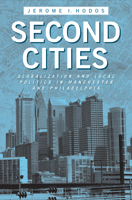

<body bgcolor="#FFFFFF" text="#000000" link="#0000FF" vlink="#CC0000" alink="#CC0000"><center><hr width="350" size="1" align="center" noshade>How Philadelphia and Manchester have successfully grappled with globalization, carving out a series of distinctive niche roles for themselves over time<hr width="350" size="1" align="center" noshade><p><a href="https://cdcshoppingcart.uchicago.edu/Cart/ChicagoBook.aspx?ISBN=9781439902318&&PRESS=temple" target="_top">Buy this book!</a> | <a href="https://cdcshoppingcart.uchicago.edu/Cart/Cart.aspx?PRESS=temple" target="_top">View Cart</a> | <a href="https://cdcshoppingcart.uchicago.edu/Cart/Cart.aspx?PRESS=temple" target="_top">Check Out</a></p><p></p></center><!--none//--><h1>Second Cities</h1>
<H2>Globalization and Local Politics in Manchester and Philadelphia</H2>
<h3>Jerome I. Hodos</h3>
<P>cloth 1-4399-0231-3 $70.50, May 11, <FONT COLOR=#990033>Available</FONT>
<br>paper 1-4399-0232-1 $30.95, <FONT COLOR=#990033>Available</FONT>
<br>Electronic Book 1-4399-0233-X $30.95 <FONT COLOR=#990033>Available</FONT>
<BR> 264 pp
6x9
8&nbsp;tables 5&nbsp;map(s) 3&nbsp;figures 13&nbsp;halftones
</P><h3 align="center"><P><font color="#996633">Outstanding Academic Title, <i>Choice</i>,
2012</font></P>
<P><font color="#996633">Kenneth Jackson Best Book Award from the Urban History Association,
2011</font></P>
</H3>
<BLOCKQUOTE><I>"Hodos�s in-depth qualitative study, drawing on both archival and secondary sources, presents the social history of Philadelphia and Manchester and how they achieved their present status as major metropolises. It is hard to imagine a more carefully researched study of the two cities. Hodos writes with verve and enthusiasm, and the sheer volume of the original scholarship, together with the interesting sociological framework of the comparative study, makes this an innovative, top-notch book. </I>Second Cities<I> is essential reading, and it should become part of a venerated tradition of urban historical case studies."</I><BR>&#151<B>David Smith</B>, Professor of Sociology and Planning, Policy and Design at the University of California, Irvine<i></I></BLOCKQUOTE>
<p>Manchester, England, and Philadelphia, Pennsylvania, are what sociologist Jerome Hodos calls second cities�viable alternatives to well-known global cities such as London and New York. In <em>Second Cities</em>, Hodos considers how Manchester and Philadelphia have confronted problems of globalization over the past two centuries.</p>
<p>This thought-provoking, comparative look at these cities examines their histories, economies, migration patterns, cultural innovations, transportation planning, and self-identities. Hodos demonstrates not just how the two cities are positioned in global flows of capital, goods, people, and ideas but also how each has used what he calls �municipal foreign policy� to preserve and rejuvenate its position over time. The second city offers an illustrative lens through which to view other urban centers, from Atlanta to Bangalore, Seattle, and Turin.</p>
<p>Hodos�s description and analysis of urban development over a broad time frame offer lessons for policy makers, scholars, and community leaders concerned with the impact of globalization on their own cities. </p>
<BR>&nbsp;<h2>Excerpt</h2><P>Excerpt available at <a href="http://www.temple.edu/tempress">www.temple.edu/tempress</a></p>
<BR>&nbsp;<h2>Reviews</h2>
<p><I>"Hodos�s study is stimulating and innovative. </I>Second Cities<I> is lively, to the point, and filled with interesting illustrations. The two cases of Manchester and Philadelphia are fascinating and carefully researched, and Hodos�s important �view from the bottom� look at the global urban system from the perspective of cities also provides an interesting perspective on a wide range of subjects connected to urban development." </I><br>&#151<b>Paul Kantor</b>, Professor of Political Science at Fordham University
<p><i>"With creative conceptualization, Hodos has infused complexity, choice, and history into a discussion that often has been satisfied with simple categorization. Summing Up: Highly recommended."</i><br>&#151<b><i>Choice</i></b>
<p><i>"The book�s greatest strengths can be found in its use of the comparative case study method supported by detailed historical research. As such, the thoroughness and attention to detail in </i>Second Cities<i> offers an exemplar. The data support arguments made about the rise or fall of status in the global cities hierarchy and offer insights into the political, ideological, and financial battles of cities that may set the stage for future policies." </i><br>&#151<b><i>The American Journal of Sociology</i></b>
<p><i>"I do recommend this interesting and well-written book to anyone interested in economic development. Hodos offers sage advice to many cities today."</i><br>&#151<b><i>The Journal of Housing and the Built Environment</i></b>
<p><i>"Compelling.... Hodos�s clearly written and well-supported argument explores the intricacies of these [cities'] changes while highlighting the similarities of the two cities� paths."</i> <br>&#151<b><i>Journal of American History</i></b>
<p><i>"Hodos presents a detailed and engaging portrait of the development of two industrial cities � Manchester and Philadelphia � in the wake of globalization and their longtime roles as what he calls �second cities�.... As carefully woven urban biographies, those with an interest in (particularly 19th-century) urban development will find much to like. Additionally, [Hodos] takes several important, but preliminary, steps toward a theory of second cities and municipal foreign policy. As a result, this book not only brings to life the contributions of Philadelphia and Manchester to the contemporary global urban system, but also opens the door for an exciting new way of thinking about cities in globalization more broadly."</i> <br>&#151<b><i>International Journal of Comparative Sociology</i></b>
<p><i>"[Hodos'] introductory chapter, which stands as a model of analytical clarity, also serves effectively as a primer to the scholarship connecting globalization and urban processes.... Especially significant in this first half of the book is his exploration of global cultural innovations.... In the second half of the book, Hodos puts a spotlight on agency. It's a needed corrective to the structural interpretations that dominate studies of globalization and urbanization.... Hodos's creatively researched and well-written study will engage social scientists and historians interested in urban formation and global processes, as well as general readers and scholars interested in the two Atlantic cities, Manchester and Philadelphia. </i>Second Cities<i> should find an audience especially among those who seek to understand the global urban system as more than a story of cities sitting at the top of the heap."</i> <br>&#151<b><i>The Journal of Regional Science</i></b>
<BR>&nbsp;<h2>Contents</h2><P>
<p>List of Tables and Figures<br>
Acknowledgments<br>
1. Introduction: Globalization, Urbanization and the Second City <br>
2. The Era of Second City Formation, 1770-1840 <br>
3. Second City Economies <br>
4. Migration Patterns in Second Cities <br>
5. Making Global Culture: Ideas and Innovation in Second Cities <br>
6. Municipal Foreign Policy: Planning for Global Integration <br>
7. Identity and Governance in the Second City <br>
8. A World of Cities? <br>
Notes <br>
References <br>
Index</p>
</P><BR>&nbsp;<H2>About the Author(s)</H2>
<P><strong>Jerome I. Hodos</strong> is Associate Professor of Sociology at Franklin & Marshall College. He is a contributor to <em>Social Capital in the City</em> (Temple) and <em>The City in American Political Development</em>.</P>
<BR><H2>Subject Categories</H2>
<p><A HREF="/tempress/urban.html" TARGET="_top">Urban Studies</a>
<BR><A HREF="/tempress/sociology.html" TARGET="_top">Sociology</a>
<BR><A HREF="/tempress/history.html" TARGET="_top">History</a>
</p>
<p align="center"><a href="https://cdcshoppingcart.uchicago.edu/Cart/ChicagoBook.aspx?ISBN=9781439902318&&PRESS=temple" target="_top">Buy this book!</a> | <a href="https://cdcshoppingcart.uchicago.edu/Cart/Cart.aspx?PRESS=temple" target="_top">View Cart</a> | <a href="https://cdcshoppingcart.uchicago.edu/Cart/Cart.aspx?PRESS=temple" target="_top">Check Out</a></p><p><font face="Arial" size="1"><a href="copyright.html" onMouseOver="window.status='Web Copyright Policy';return true;" onMouseOut="window.status=''" title="Web Copyright Policy">&copy;</a> 2015 <a href="http://www.temple.edu" target="new" onMouseOver="window.status='Link to Temple University home page';return true;" onMouseOut="window.status=''" title="Link to Temple University home page">Temple University</a>. All Rights Reserved. http://www.temple.edu/tempress/titles/2081_reg.html</font></p>